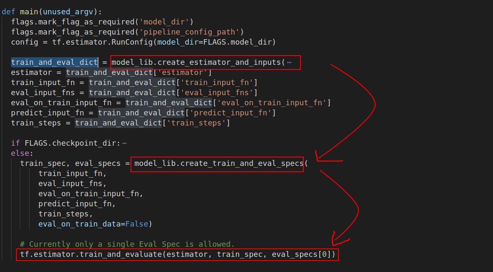
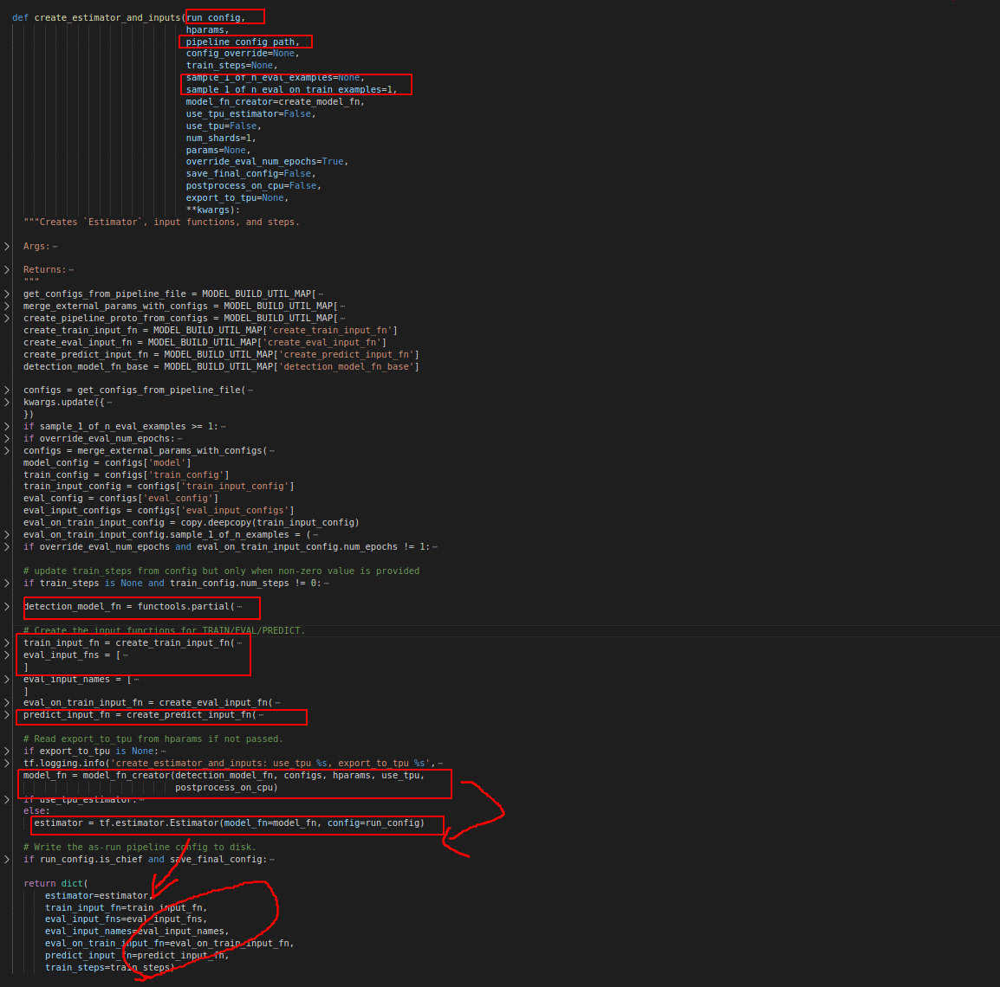
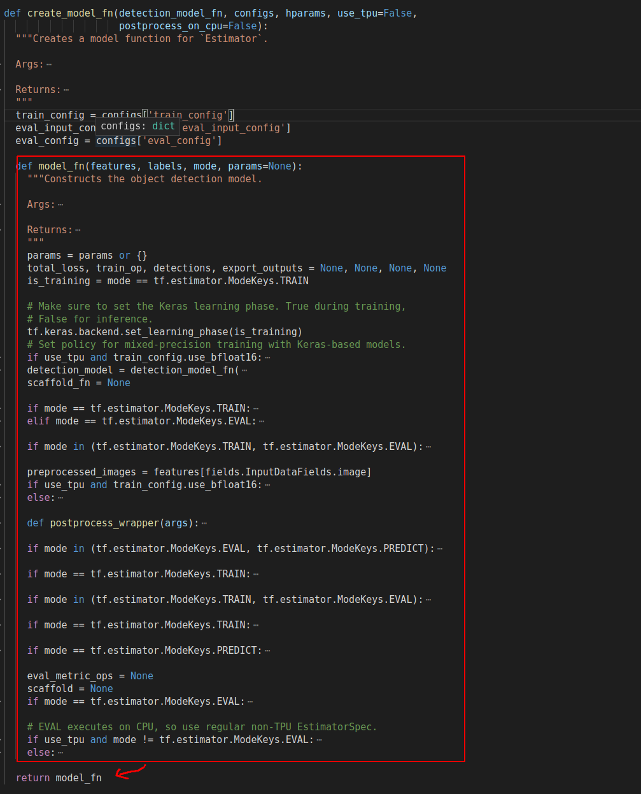
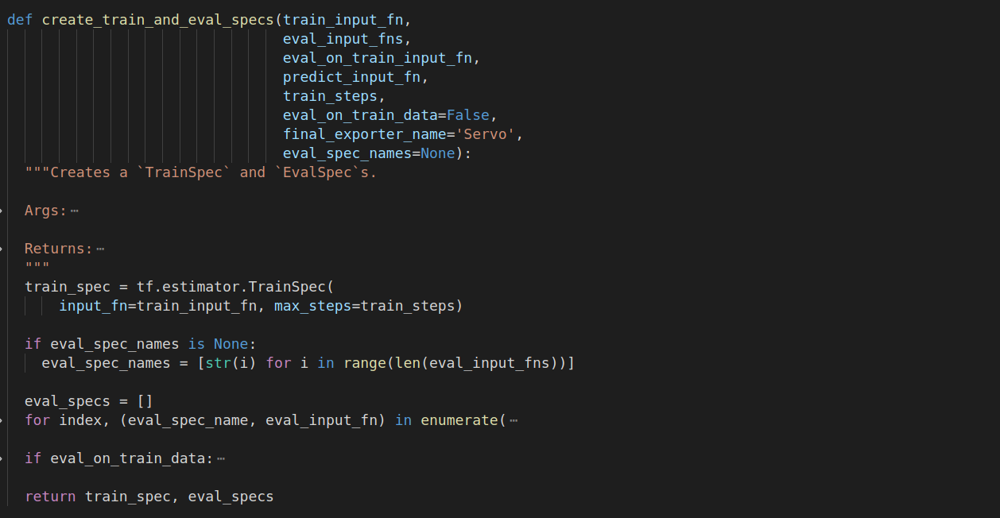

目标
解析object detection项目源码
model_main.py
相关引用
model_lib.py
代码分解

程序主干是使用estimator.train_and_evaluate方法进行训练.
通过model_lib.py文件中的create_estimator_and_inputs create_train_and_eval_specs两个方法构造estimator，input_fn，train_spec，eval_specs等内容

create_estimator_and_inputs中的model_fn
1 | model_fn = model_fn_creator(detection_model_fn, configs, hparams, use_tpu, |
由create_model_fn实现

最后create_train_and_eval_specs方法实现train_spec，eval_specs

tf.estimator.train_and_evaluate简介
调用方式：
1 | tf.estimator.train_and_evaluate( |
该函数的参数有三个：
estimator：一个 Estimator 实例。
train_spec：一个 TrainSpec 实例。用来配置训练过程。
eval_spec：一个 EvalSpec 实例。用来配置评估过程、（可选）模型的导出。
该函数的返回值有一个：
Estimator.evaluate 的结果及前面指定的 ExportStrategy 的输出结果。
train_and_evaluate编写的程序同时支持本地、集群上的训练，而不需要修改任何代码。所以model_main.py可以在本地执行也可以在TPU上执行
参数解析：
tf.estimator.Estimator 定义 Estimator 实例 estimator。类 Estimator 的完整形式是：
1 | tf.estimator.Estimator(model_fn, model_dir=None, config=None, |
定义模型函数 model_fn，返回类 tf.estimator.EstimatorSpec 的一个实例。model_fn 的完整定义形式是（函数名任取）：
1 | def create_model_fn(features, labels, mode, params=None): |
features，labels 可以是一个张量，也可以是由张量组成的一个字典；
mode 指定训练模式，可以取 （TRAIN, EVAL, PREDICT）三者之一；
params 是一个（可要可不要的）字典，指定其它超参数。
model_fn 必须定义模型的预测结果、损失、优化器等，它返回类 tf.estimator.EstimatorSpec 的一个对象。
类 tf.estimator.EstimatorSpec 的完整形式是：
1 | tf.estimator.EstimatorSpec( |
mode 指定当前是处于训练、验证还是预测状态；
predictions 是预测的一个张量，或者是由张量组成的一个字典；
loss 是损失张量；
train_op 指定优化操作；
eval_metric_ops 指定各种评估度量的字典，这个字典的值必须是如下两种形式：
- Metric 类的实例；
- 调用某个评估度量函数的结果对 (metric_tensor, update_op)；
参数 export_outputs 只用于模型保存，描述了导出到 SavedModel 的输出格式；
参数 scaffold 是一个 tf.train.Scaffold 对象，可以在训练阶段初始化、保存等时使用。
train_spec 参数接收一个 tf.estimator.TrainSpec 实例。
1 | # TrainSpec的参数 |
input_fn： 参数用来指定数据输入。
max_steps： 参数用来指定训练的最大步数，这是训练的唯一终止条件。
hooks： 参数可以加载tf.train.SessionRunHook，用来在 session 运行的时候做一些额外的操作。这个hooks是一个为estimator服务的类，它有begin、after_create_session、before_run、after_run、end方法，分别用于在创建Session之前、创建Session之后、Session运行之前、Session运行之后以及Session即将关闭之前执行一些需要的操作。
eval_spec 参数接收一个 tf.estimator.EvalSpec 实例。相比 TrainSpec，EvalSpec 的参数多很多。
1 | __new__( |
input_fn： 参数用来指定数据输入。
steps： 用来指定评估的迭代步数，如果为None，则在整个数据集上评估。
name：如果要在多个数据集上进行评估，通过 name 参数可以保证不同数据集上的评估日志保存在不同的文件夹中，从而区分不同数据集上的评估日志。
不同的评估日志保存在独立的文件夹中，在 TensorBoard 中从而独立的展现。
hooks：参数可以加载tf.train.SessionRunHook，用来在 session 运行的时候做一些额外的操作。
exporters：一个 tf.estimator.export 模块中的类的实例。
start_delay_secs：调用 train_and_evaluate 函数后，多少秒之后开始评估。第一次评估发生在 start_delay_secs + throttle_secs 秒后。
throttle_secs：多少秒后又开始评估，如果没有新的 checkpoints 产生，则不评估，所以这个间隔是最小值。